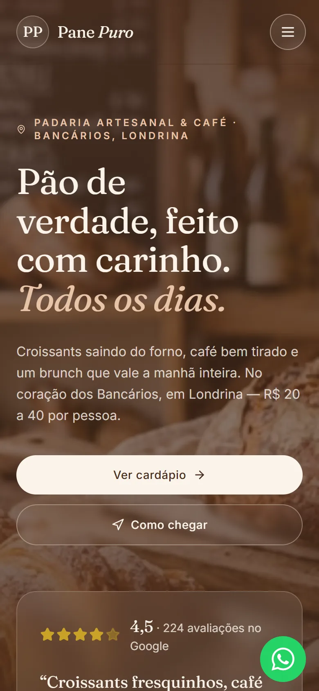
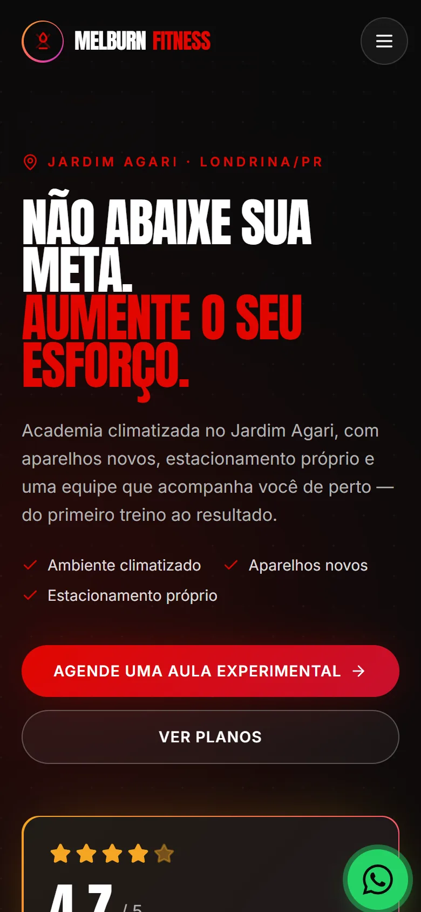

MenuFlow
Produto nosso. Cardápio digital para bar, pizzaria, açaí e food truck: o cliente monta o pedido sozinho e ele chega pronto no WhatsApp do dono. QR na mesa, link na bio, preço que muda em todos os canais de uma vez.
Londrina · Paraná
Dois produtos nossos, com gente pagando para usar, e sites de estudo feitos à mão, do zero. Tudo desenhado, escrito e mantido pela gente. Está tudo aí embaixo — é só olhar.
Projetos
Cada captura abaixo é a tela de verdade, tirada num celular de 390 pixels. Os que estão no ar têm link — abra e confira.
Produto nosso. Cardápio digital para bar, pizzaria, açaí e food truck: o cliente monta o pedido sozinho e ele chega pronto no WhatsApp do dono. QR na mesa, link na bio, preço que muda em todos os canais de uma vez.

Produto nosso. Ferramenta de prospecção que abre o site de cada empresa, vê o que está faltando e escreve a abordagem em cima da evidência. Quando não confirma um sinal, escreve que não confirmou.

Projeto de estudo: site completo para padaria artesanal e cafeteria. Storytelling de marca, cardápio e caminho curto até a visita — croissant saindo do forno na primeira dobra da tela.

Projeto de estudo: página que substitui o Linktree de uma academia. A nota do Google, os planos e o agendamento de aula experimental em uma página só, aberta direto da bio.
Quem somos
Tudo nesta página passou pelas mesmas mãos: a gente desenha, escreve o código, coloca no ar e mantém. Do rascunho ao ar, sem terceirizar nada. O trabalho fala por si — é só abrir.